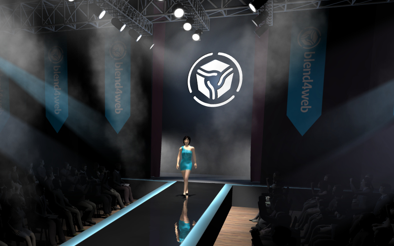

Релиз новой версии Blend4Web
Увидел свет второй публичный выпуск открытого 3D web фреймворка Blend4Web. Фреймворк предназначен для создания трехмерного интерактивного контента, работающего в браузерах без использования плагинов. Blend4Web тесно интегрирован с открытым пакетом Blender, использующимся в качестве основного инструмента редактирования 3D сцен. Воспроизведение контента осуществляется средствами WebGL, Web Audio и других браузерных технологий.
Во втором выпуске переработана демо-сцена «Показ мод», задействованы такие функции Blend4Web, как вертексная и скелетная анимация, динамическое отражение и тени, системы частиц, множественные источники света различных типов.
Добавлена начальная поддержка системы нелинейной анимации (NLA) пакета Blender. Система NLA позволяет реализовывать простые сценарии без программирования. Поддерживается включение анимации, воспроизведение звука и эффектов частиц.
Реализована поддержка специальной ноды TIME в нодовых материалах. Нода позволяет реализовывать анимацию произвольных параметров материалов. С целью повышения удобства использования специальных нод ослаблено ограничение на их имена (например, ноды TIME и TIME.001 эквивалентны).
Реализован API для модификации геометрии в реальном времени (динамическая запись буферов). Функция может быть использована для реализации редакторов, стриминга геометрии с сервера и т. п.
Добавлена поддержка метода сглаживания SMAA (Subpixel Morphological Anti-Aliasing), предложенный Crytek, метод используется по умолчанию на максимальных настройках.
Существенно увеличена производительность физической подсистемы движка (на демо-сцене «Ферма» - в 2 раза).
Проведена оптимизация и улучшение алгоритма поведения ботов.
Для камеры «По умолчанию» теперь используется режима поворота вокруг точки (Target) вместо статического.
Используется более функциональный профиль при экспорте в HTML файл (ранее использовался режим с низким качеством).
В целях оптимизации движок ставится на паузу в неактивной вкладке.
Бинарные сборки аддона к Blender'у теперь включают поддержку 32-битной x86 архитектуры Linux (помимо 64-битной).
Улучшена производительность и стабильность аддона для 64-битной Windows (теперь сборка осуществляется с помощью Windows SDK вместо MinGW, для 32-битной Windows сборки по-прежнему используется кросс-компиляция).
Проведена оптимизация графических эффектов (каустика и параллакс).
Реализован обход проблемной реализации графической системы на мобильных устройствах c графическими процессорами Qualcomm Snapdragon (таких как Sony Xperia Z2).
Реализован обход проблемной реализации текстур глубины, которая приводила к нарушению рендеринга в Firefox 28 в операционных системах Linux и OS X (bugzilla.mozilla.org).
Реализован обход ошибки транслятора шейдеров ANGLE, которая приводила к нарушению рендеринга в Chrome 34/35 в Windows (code.google.com).
Реализована предварительная поддержка Internet Explorer 11.
Доработан загрузчик сцен с целью учета частично загруженных файлов, что актуально для медленных сетевых соединений.
Исправлена проблема с некорректной громкостью звука в Firefox.
Переработана и улучшена документация, в частности разделы по установке, устранению проблем, созданию простейших приложений.
В дистрибутив добавлены исходные файлы обучающих материалов.